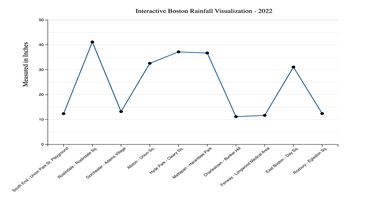

Boston Rainfall DataViz
An interactive D3.js visualization that turns rainfall observations into a clearer comparison of seasonal movement, peaks, and quieter periods.

Data analyst + front-end developer
Prepared the data, built the visualization, and shaped the page around comparison-first reading.
D3.js, SVG, JavaScript
Used SVG marks, hover states, and direct labels to keep the chart readable.
Trend clarity
Made seasonal patterns visible without overwhelming the viewer.
Project Breakdown
Rainfall data is hard to compare quickly
Monthly and seasonal patterns can disappear in raw tables, especially when viewers need to compare many periods.
Structured rainfall observations
Worked from the project dataset, normalized fields for charting, and organized the view around monthly comparison.
Interactive D3.js charting
Combined SVG marks, tooltips, and visual hierarchy to make exploration precise without adding interface clutter.
Faster pattern recognition
The final view reduces table-reading effort by making peaks, quieter periods, and seasonal shifts visible in one screen.
Highlights
Readable at a glance
Color cues and spacing emphasize monthly patterns without sacrificing precision.
Clear next step
Add summary statistics, source notes, and year-over-year controls for a stronger analytical read.
Explore more projects
Dive into the full archive of analytics and visualization.